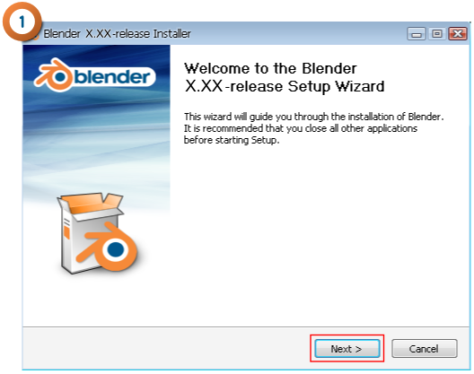
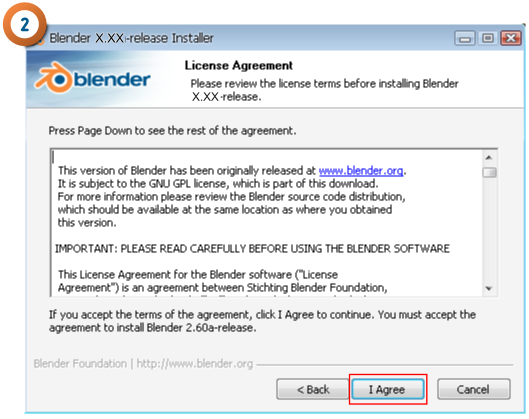
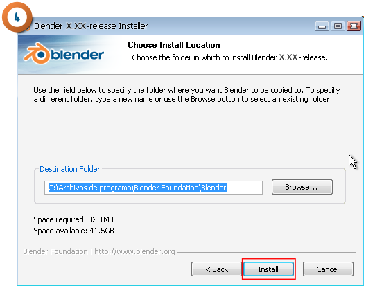
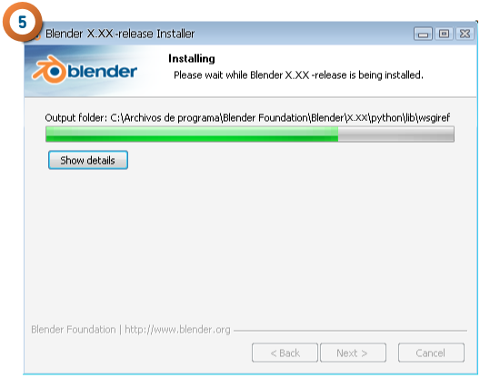
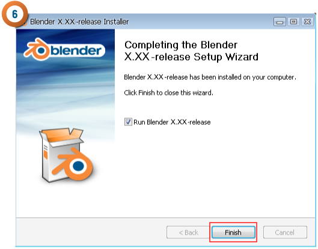
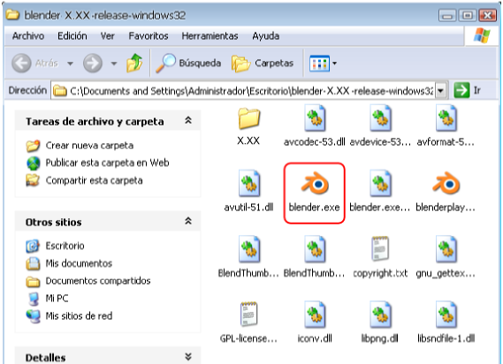
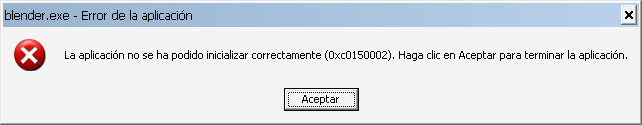

Windows
Para la plataforma Windows hay disponibles dos versiones: instalable y autoejecutable.
- Versión Installer (recomendada). Al ejecutarlo se procede a la instalación del programa en el sistema operativo.






- Versión ZIP Archive. Una vez descomprimido, permite ejecutar el programa de forma autónoma. Tiene la ventaja de poder llevarse de forma portable dentro de un pendrive.

En ambos casos al lanzarse el programa se abren dos ventanas. Una de ellas (la que tiene apariencia de consola de programación con fondo negro) deberá quedar siempre en segundo plano y no cerrarse.
blender.exe - Error de la aplicación
Blender puede ejecurtarse en versiones de Windows desde XP en adelante. En XP puede dar un fallo con este mensaje a la hora de lanzarlo tras la instalación.
La solución es instalar el Paquete Redistribuible Microsoft Visual C++ 2008 (x86) que se descarga desde la web oficial.